Python 2.7.12 |Anaconda 4.2.0 (64-bit)| (default, Jun 29 2016, 11:07:13) [MSC v.1500 64 bit (AMD64)]
Type "copyright", "credits" or "license" for more information.
IPython 5.1.0 -- An enhanced Interactive Python.
? -> Introduction and overview of IPython's features.
%quickref -> Quick reference.
help -> Python's own help system.
object? -> Details about 'object', use 'object??' for extra details.
In [1]: runfile('C:/Users/xeroj/Downloads/V/Computer Vision/Lab4_Clustering__Classification/lab4_problem2.py', wdir='C:/Users/xeroj/Downloads/V/Computer Vision/Lab4_Clustering__Classification')
-----========== Dataset Loading
Dataset: CIFAR10 , Feature: PIXEL Algorithm: KMEANS
Loading 5 CIFAR-10 batches
Took 2.987 s to load and split CIFAR10
Training: 37500 ,Testing: 12500
-----========== Computing Features: PIXEL
Took 0.000 s to compute features
-----========== Clustering Training: KMEANS
Performing KMEANS training for 37500 images.
KMEANS took 326.987 s for k = 10
-----========== KMEANS Training Accuracy Evaluation
Checking the accuracy of KMEANS using 37500 images
KMEANS Training Accuracy: 22.048 %
KMEANS took 2.004 s for k = 10
-----========== KMEANS Testing
Performing K-Means testing for 12500 images.
KMEANS took 0.547 s for k = 10
-----========== KMEANS Testing Accuracy Evaluation
Checking the accuracy of KMEANS using 12500 images
KMEANS Testing Accuracy: 22.208 %
KMEANS took 0.549 s for k = 10
Program ran for 333.079 s
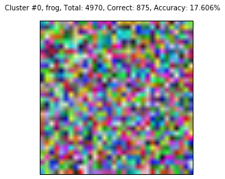
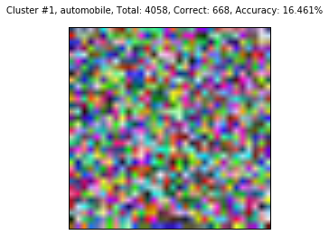
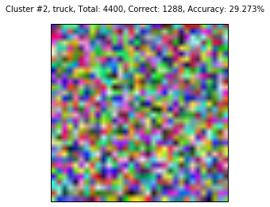
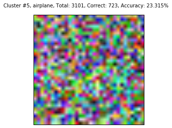
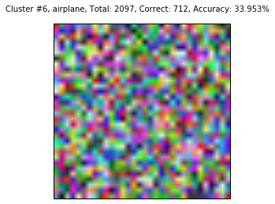

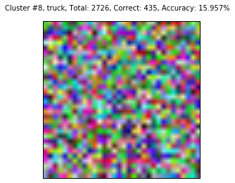
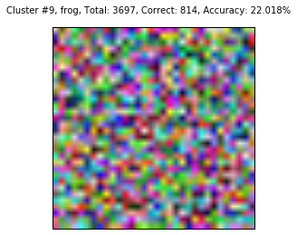
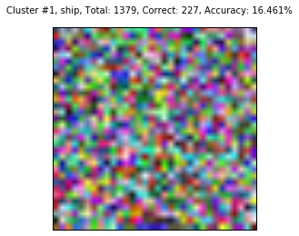
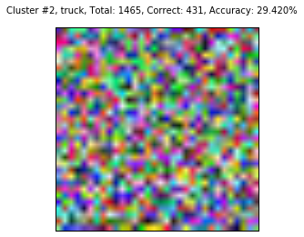
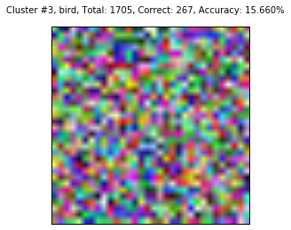
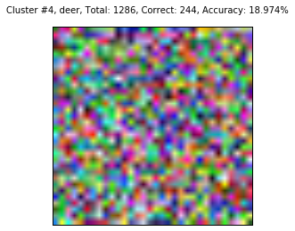
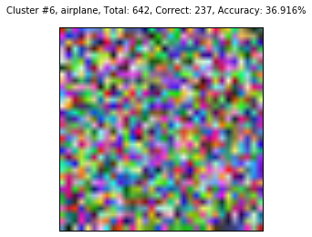
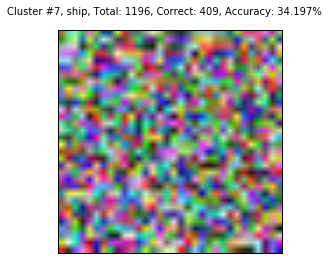

In [2]: runfile('C:/Users/xeroj/Downloads/V/Computer Vision/Lab4_Clustering__Classification/lab4_problem2.py', wdir='C:/Users/xeroj/Downloads/V/Computer Vision/Lab4_Clustering__Classification')
Reloaded modules: lib_features, lib_mnist, lib_cifar
-----========== Dataset Loading
Dataset: CIFAR10 , Feature: HOG Algorithm: KMEANS
Loading 5 CIFAR-10 batches
Took 3.161 s to load and split CIFAR10
Training: 37500 ,Testing: 12500
-----========== Computing Features: HOG
Took 47.322 s to compute features
-----========== Clustering Training: KMEANS
Performing KMEANS training for 37500 images.
KMEANS took 5.319 s for k = 10
-----========== KMEANS Training Accuracy Evaluation
Checking the accuracy of KMEANS using 37500 images
Cluster #0, truck, Total: 4381, Correct: 955, Accuracy: 21.799%
Cluster #1, frog, Total: 2732, Correct: 713, Accuracy: 26.098%
Cluster #2, ship, Total: 5389, Correct: 1456, Accuracy: 27.018%
Cluster #3, frog, Total: 3102, Correct: 696, Accuracy: 22.437%
Cluster #4, automobile, Total: 2265, Correct: 760, Accuracy: 33.554%
Cluster #5, truck, Total: 2282, Correct: 787, Accuracy: 34.487%
Cluster #6, dog, Total: 2800, Correct: 695, Accuracy: 24.821%
Cluster #7, dog, Total: 6586, Correct: 1290, Accuracy: 19.587%
Cluster #8, automobile, Total: 2763, Correct: 763, Accuracy: 27.615%
Cluster #9, bird, Total: 5200, Correct: 1098, Accuracy: 21.115%
KMEANS Training Accuracy: 24.568 %
KMEANS took 0.007 s for k = 10
-----========== KMEANS Testing
Performing K-Means testing for 12500 images.
KMEANS took 0.003 s for k = 10
-----========== KMEANS Testing Accuracy Evaluation
Checking the accuracy of KMEANS using 12500 images
Cluster #0, truck, Total: 1406, Correct: 333, Accuracy: 23.684%
Cluster #1, frog, Total: 866, Correct: 223, Accuracy: 25.751%
Cluster #2, ship, Total: 1858, Correct: 527, Accuracy: 28.364%
Cluster #3, frog, Total: 1027, Correct: 228, Accuracy: 22.201%
Cluster #4, automobile, Total: 753, Correct: 268, Accuracy: 35.591%
Cluster #5, truck, Total: 753, Correct: 245, Accuracy: 32.537%
Cluster #6, dog, Total: 842, Correct: 228, Accuracy: 27.078%
Cluster #7, dog, Total: 2245, Correct: 442, Accuracy: 19.688%
Cluster #8, automobile, Total: 994, Correct: 268, Accuracy: 26.962%
Cluster #9, deer, Total: 1756, Correct: 339, Accuracy: 19.305%
KMEANS Testing Accuracy: 24.808 %
KMEANS took 0.003 s for k = 10
Program ran for 55.816 s
In [3]: